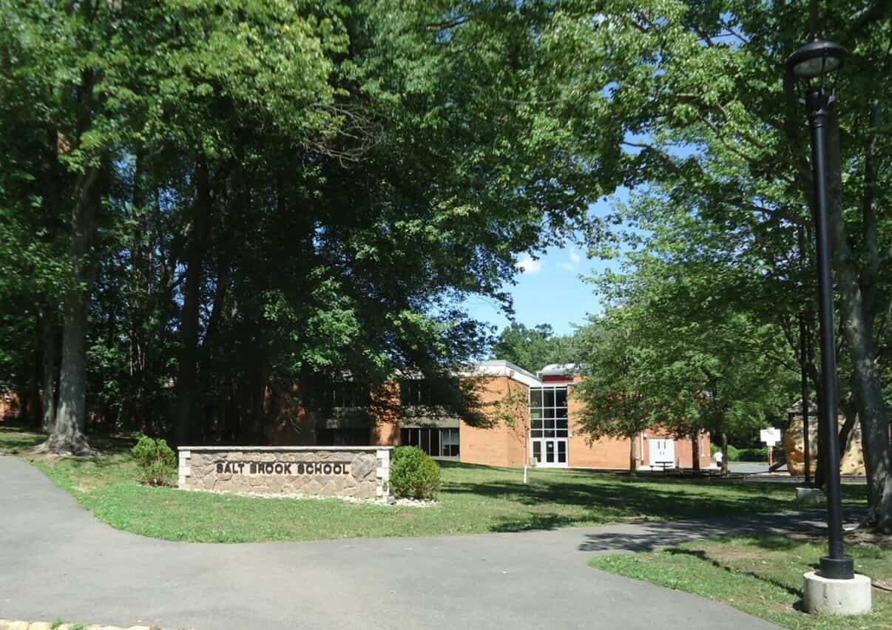
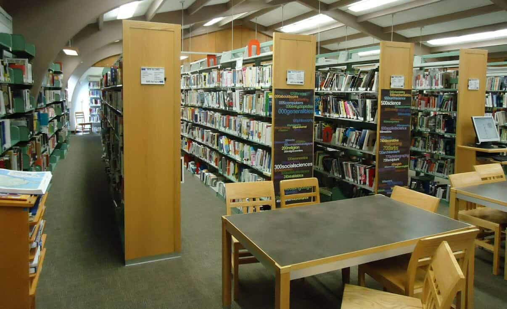
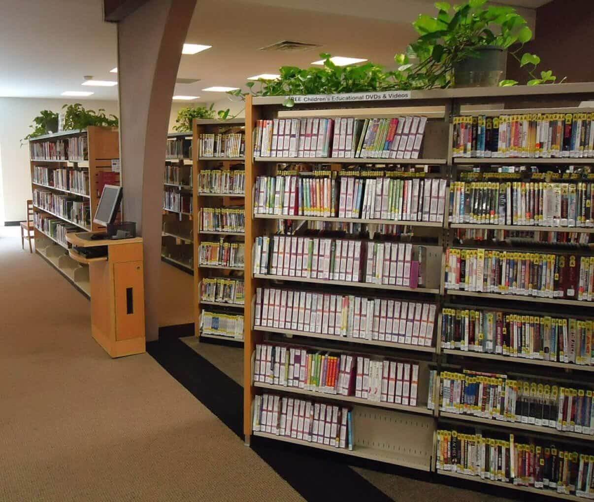

Important Updates
Budget session recap
The board reviewed instructional priorities and next-year capital requests.
Education & School
School links, BOE updates, and expandable resources for families and students.



Important Updates
The board reviewed instructional priorities and next-year capital requests.
School Links
Quick access to frequently used district resources.
Community Learning
Homework support, robotics, visual arts, and middle school clubs.
Town recreation, arts intensives, and academic skill refresh options.
Local providers, peer mentorship, and library-based academic support.